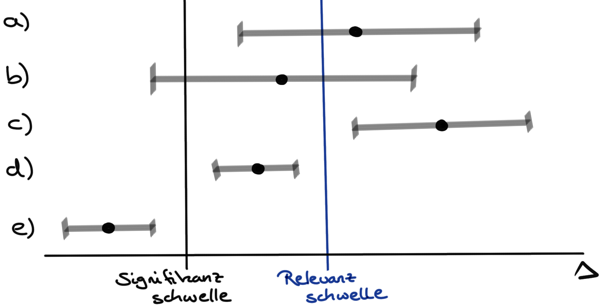

15 Statistisches Testen
15.1 Fischer vs. Neyman-Pearson
15.2 Die Testentscheidung…
| Teststatistik | p-Wert | 95% Konfidenzintervall | |
| \(\boldsymbol{T_{calc}}\) | \(\boldsymbol{Pr(\geq T_{\alpha}|H_0)}\) | \(\boldsymbol{KI_{1-\alpha}}\) | |
| H\(_0\) ablehnen | \(T_{calc} \geq T_{\alpha = 5\%}\) | \(Pr(\geq T_{\alpha}| H_0) \leq \alpha\) | Bei \(\Delta_{A-B}\): enthält nicht 0 oder bei \(\Delta_{A/B}\): enthält nicht 1 |
Das ist ein Text Tabelle 15.1
| \(\boldsymbol{T_{calc}}\) | \(\boldsymbol{Pr(\geq T_{\alpha}|H_0)}\) | \(\boldsymbol{T_{calc}}\) | \(\boldsymbol{Pr(\geq T_{\alpha}|H_0)}\) | ||
|---|---|---|---|---|---|
| \(\Delta \uparrow\) | steigt | sinkt | \(\Delta \downarrow\) | sinkt | steigt |
| \(s \uparrow\) | sinkt | steigt | \(s \downarrow\) | steigt | sinkt |
| \(n \uparrow\) | steigt | sinkt | \(n \downarrow\) | sinkt | steigt |
15.2.1 … anhand der Teststatistik
\(T_{calc}\)


Häufig verwirrt die etwas theoretische Herangehensweise an den \(\alpha\)-Fehler und \(\beta\)-Fehler. Wir versuchen hier nochmal die Analogie eines Rauchmelders und dem Feuer im Haus.

- \(\boldsymbol{\alpha}\)-Fehler: Alarm without fire. Der statistische Test schlägt Alarm und wir sollen die \(H_0\) ablehnen, obwohl die \(H_0\) in Wahrheit gilt und kein Effekt vorhanden ist.
- \(\boldsymbol{\beta}\)-Fehler: Fire without alarm. Der statistische Test schlägt nicht an und wir sollen die \(H_0\) beibehalten, obwohl die \(H_0\) in Wahrheit nicht gilt und ein Effekt vorhanden ist.
Bei der Entscheidung mit der Teststatistik müssen wir zwei Fälle unterschieden.
Bei einem t-Test und einem \(\mathcal{X}^2\)-Test gilt, wenn \(T_{calc} \geq T_{\alpha = 5\%}\) wird die Nullhypothese (H\(_0\)) abgelehnt.
Bei einem Wilcoxon-Mann-Whitney-Test gilt, wenn \(T_{calc} < T_{\alpha = 5\%}\) wird die Nullhypothese (H\(_0\)) abgelehnt.
Achtung – Wir nutzen die Entscheidung mit der Teststatistik nur und ausschließlich in der Klausur. In der praktischen Anwendung hat die Betrachtung der berechneten Teststatistik keine Verwendung mehr.
15.2.2 … anhand dem p-Wert
\(Pr(T|H_0)\)
Wenn der p-Wert \(\leq \alpha\) dann wird die Nullhypothese (H\(_0\)) abgelehnt. Das Signifikanzniveau \(\alpha\) wird als Kulturkonstante auf 5% oder 0.05 gesetzt. Die Nullhypothese (H\(_0\)) kann auch Gleichheitshypothese gesehen werden. Wenn die H\(_0\) gilt, liegt kein Unterschied zwischen z.B. den Behandlungen vor.
15.2.3 … anhand des 95% Konfidenzintervall

- \((\bar{y}_{1}-\bar{y}_{2})\) ist der Effekt. In diesem Fall der Mittelwertsunterschied. Wir finden den Effekt als Punkt in der Mitte des Intervals.
- \(T_{\alpha = 5\%} \cdot \frac {s}{\sqrt{n}}\) ist ein fester Wert, der die Arme des Intervals bildet. Wir vereinfachen die Formel mit \(s_p\) für die gepoolte Standardabweichung und \(n_g\) für die Fallzahl der beiden Gruppen. Wir nehmen an das beide Gruppen die gleiche Fallzahl \(n_1 = n_2\) haben.

- Nicht signifikant und nicht relevant
- Signifikant und nicht relevant
- Signifikant und relevant
- Signifikant und nicht relevant
- bla
\[ \left[ (\bar{y}_{dog}-\bar{y}_{cat}) - T_{\left( 1-\tfrac{\alpha}{2} \right)} \cdot \frac {s_p}{\sqrt{n_g}}; \; (\bar{y}_{dog}-\bar{y}_{cat}) + T_{\left( 1-\tfrac{\alpha}{2} \right)} \cdot \frac {s_p}{\sqrt{n_g}}; \right] \]
Bei der Entscheidung mit dem 95% Konfidenzinterval müssen wir zwei Fälle unterscheiden.
Entweder schauen wir uns einen Mittelwertsunterschied (\(\Delta_{A-B}\)) an, dann können wir die Nullhypothese (H\(_0\)) nicht ablehnen, wenn die 0 im 95% Konfidenzinterval ist.
Oder wir schauen uns einen Anteilsunterschied (\(\Delta_{A/B}\)) an, dann können wir die Nullhypothese (H\(_0\)) nicht ablehnen, wenn die 1 im 95% Konfidenzinterval ist.
15.2.4 Einseitig oder zweiseitig?

15.3 Der Effektschätzer
15.3.1 Unterschied zweier Mittelwerte
Wir berechnen zwei Mittelwerte \(\bar{y}_1\) und \(\bar{y}_2\). Wenn wir wissen wollen wie groß der Effekt zwischen den beiden Mittelwerten ist, dann bilden wir die Differenz. Wir berechnen das \(\Delta\) von \(y_1\) und \(y_2\) indem wir die Diffenz bilden.
\[ \Delta_{y_1-y_2} = \bar{y}_1 - \bar{y}_2 \]
Wenn es keinen Unterschied zwischen den beiden Mittelwerten \(\bar{y}_1\) und \(\bar{y}_2\) gibt, dann ist die Differenz \(\Delta_{y_1-y_2} = \bar{y}_1 - \bar{y}_2\) gleich 0.
\[ H_0: \Delta_{y_1-y_2} = \bar{y}_1 - \bar{y}_2 = 0 \]
In Tabelle 15.2 ist eine Datenbeispiel gegeben.
| animal | jump_length |
|---|---|
| cat | 8.0 |
| cat | 7.9 |
| cat | 8.3 |
| cat | 9.1 |
| dog | 8.0 |
| dog | 7.8 |
| dog | 9.2 |
| dog | 7.7 |
Nehmen wir an, wir berechnen für die Sprungweite [cm] der Hundeflöhe einen Mittelwert von \(\bar{y}_{dog} = 8.2\) und für die Sprungweite [cm] der Katzenflöhe einen Mittelwert von \(\bar{y}_{cat} =8.3\). Wie große ist nun der Effekt? Oder anders gesprochen, welchen Unterschied in der Sprungweite macht es aus ein Hund oder eine Katze zu sein? Was ist also der Effekt von animal? Wir rechnen \(\bar{y}_{dog} - \bar{y}_{cat} = 8.2 - 8.3 = -0.1\). Zum einen wissen wir jetzt “die Richtung”. Da wir ein Minus vor dem Mittelwertsunterschied haben, müssen die Katzenflöhe weiter springen als die Hundeflöhe, nämlich 0,1cm. Dennoch ist der Effekt sehr klein.
15.3.2 Unterschied zweier Anteile
Neben den Unterschied zweier Mittelwerte ist auch häufig das Interesse an dem Unterschied zwischen zwei Wahrscheinlichkeiten oder auch Anteilen. Ebenso kann die Chance berechnet werden. Hier tritt häufig Verwirrung auf, daher hier zuerst ein Beispiel.
| Infected | |||
| Yes (1) | No (0) | ||
| Animal | Dog | \(23_{\;\Large a}\) | \(10_{\;\Large b}\) |
| Cat | \(18_{\;\Large c}\) | \(14_{\;\Large d}\) |
Aus der Tabelle 15.3 können wir entnehmen, dass 23 Hunde mit Flöhen infiziert sind und 10 Hunde keine Infektion aufweisen. Bei den Katzen haben wir 18 infizierte und 14 gesunde Tiere beobachtet. Wir können nun zwei Arten von Anteilen berechnen. Das bekanntere ist die Frequenz oder Wahrscheinlichkeit oder Risk Ratio (RR). Das andere ist das Chancenverhältnis oder Odds Ratio (OR). Beide kommen in der Statistik vor und sind unterschiedlich zu interpretieren.
15.3.2.1 Wahrscheinlichkeitsverhältnis oder Risk Ratio (RR)
\[ Pr(\mbox{dog}|\mbox{infected}) = \cfrac{a}{a+c} = \cfrac{23}{23+10} \approx 0.67 \]
\[ Pr(\mbox{cat}|\mbox{infected}) = \cfrac{b}{b+d} = \cfrac{18}{18+14} \approx 0.56 \]
\[ \Delta_{y_1/y_2} = RR = \cfrac{Pr(\mbox{dog}|\mbox{infected})}{Pr(\mbox{cat}|\mbox{infected})} = \cfrac{0.67}{0.56} \approx 1.2 \]
15.3.2.2 Chancenverhältnis oder Odds Ratio (OR)
\[ Odds(\mbox{dog}|\mbox{infected}) = a:b = 23:10 = \cfrac{23}{10} = 2.3 \]
\[ Odds(\mbox{cat}|\mbox{infected}) = c:d = 18:14 = \cfrac{18}{14} \approx 1.29 \]
\[ \Delta_{y_1/y_2} = OR = \cfrac{Odds(\mbox{dog}|\mbox{infected})}{Odds(\mbox{cat}|\mbox{infected})} = \cfrac{a \cdot d}{b \cdot c} = \cfrac{2.30}{1.29} \approx 1.78 \]
Wann liegt nun kein Effekt bei einem Anteil wie dem RR oder OR vor? Wenn der Anteil in der einen Gruppe genauso groß ist wie der Anteil der anderen Gruppe. Dies gilt sowohl fürdas RR als auch das OR.
\[ H_0: RR = \cfrac{Pr(\mbox{dog}|\mbox{infected})}{Pr(\mbox{cat}|\mbox{infected})} = 1 \]
\[ H_0: OR = \cfrac{Odds(\mbox{dog}|\mbox{infected})}{Odds(\mbox{cat}|\mbox{infected})} = 1 \]
Du musst immer den Effekt, hier den Mittelwertsunterschied, im Kontext der Fragestellung bzw. des Outcomes \(y\) bewerten. Der numerische Unterschied von 0,1cm kann in einem Kontext viel sein. Das Wachstum von Bakterienkolonien kann ein Unterschied von 0,1cm sehr viel sein. Oder aber sehr wenig, wenn wir uns das Wachstum von Bambus pro Tag anschauen. Hier bist du gefragt, den Effekt in den Kontext richtig einzuordnen. Ebenso stellt sich die Frage, ob ein Unterschied von 6% viel oder wenig ist…
Wenn wir uns einen Unterschied eines Mittelwerts anschauen, dann haben wir keinen Effekt vorliegen, wenn das \(\Delta\) zwischen \(A\) und \(B\) gleich 0 ist. Die Nullhypothese gilt.
\[ \Delta_{A-B} = A - B = 0 \] Wenn wir uns einen Unterschied eines Anteils anschauen, dann haben wir keinen Effekt vorliegen, wenn das \(\Delta\) zwischen \(A\) und \(B\) gleich 1 ist. Die Nullhypothese gilt.
\[ \Delta_{A/B} = \cfrac{A}{B} = 1 \]
Dieses Wissen brauchen wir um später die Signifikanzschwelle bei einem 95% Konfidenzintervall richtig zu setzen und interpretieren zu können.